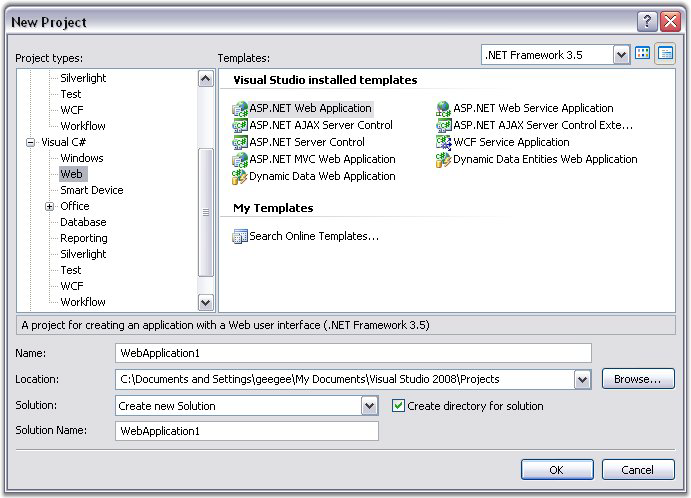
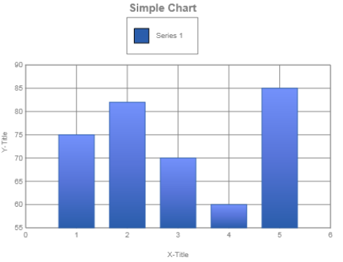

To create a simple chart control and populate it with simple data, follow the steps that are given below.
1. Open Microsoft Visual Studio. Go to the File menu and click New Website. In the New Website dialog box, select ASP.NET Web Application template, name the website and click OK. A Web application is created.

Figure 5: ASP.NET Web Application Template Selected in the New Project Dialog Box
2. Open the main form of the application in the designer.
3. Drag the ChartAdv control from the toolbox onto the Web form.
4. The data for the ChartAdv control can be added through code. Switch to the code view in VS.NET and add the method shown below.
|
[C#] using Syncfusion.Web.UI; using Syncfusion.Web.UI.WebControls.ChartAdv;
// Create a new Series. The string specified is the name of the series. Series series = new Series("Series 1"); // Add points to the series. // format (x, y) series.Points.Add(1, 75); series.Points.Add(2, 82); series.Points.Add(3, 70); series.Points.Add(4, 60); series.Points.Add(5, 85); // Set the type of Chart. series.Type = SeriesType.Column; // Add the series to the Chart. this.ChartAdv1.Series.Add(series);
|
|
[VB.NET] Imports Syncfusion.Web.UI Imports Syncfusion.Web.UI.WebControls.ChartAdv
' Create a new ChartSeries. The string specified is the name of the series. Dim series As Series = New Series("Series 1") ' Set the Text property of the series. This will be used by the legend. series.Text = series.Name ' Add points to the series. series.Points.Add(1, 75) series.Points.Add(2, 82) series.Points.Add(3, 70) series.Points.Add(4, 60) series.Points.Add(5, 85)
' Set the type of Chart. series.Type = SeriesType.Line series.Type = ChartSeriesType.Column ' Add the series to the Chart. Me.ChartAdv1.Series.Add(series) |
5. Now try running the project by selecting the Debug > Start Debugging. The chart will appear as shown below.

Figure 6: ChartAdv Control